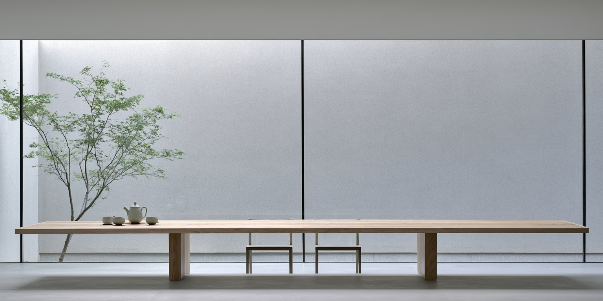
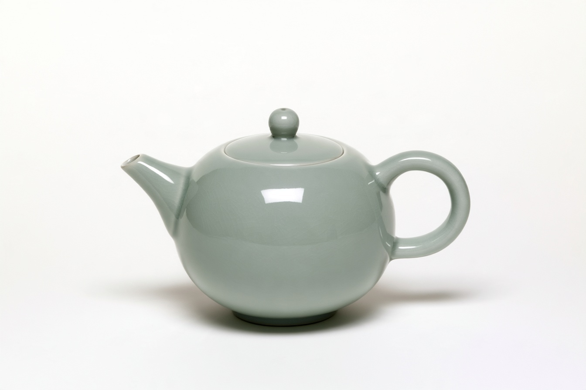
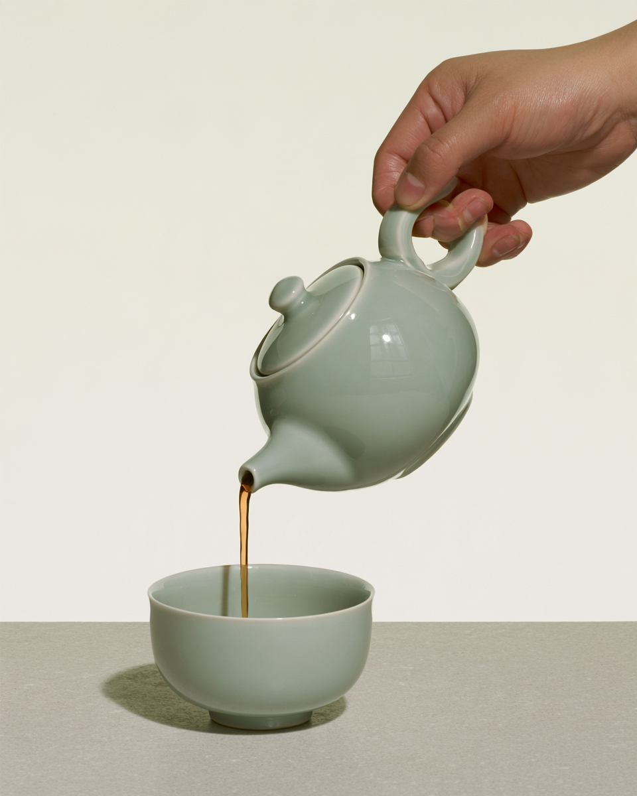
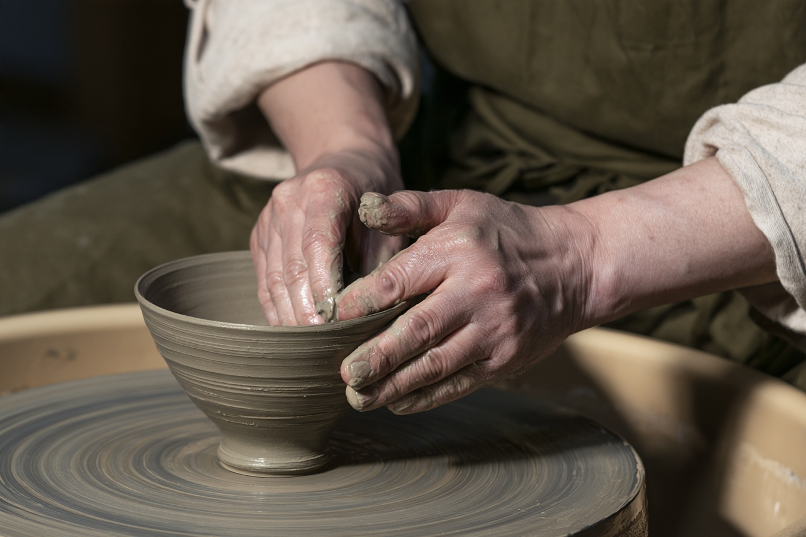
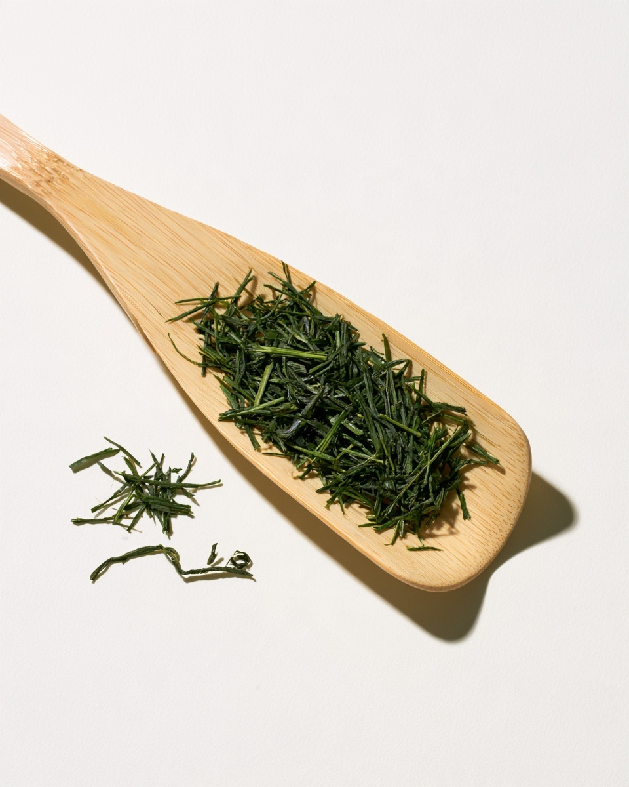
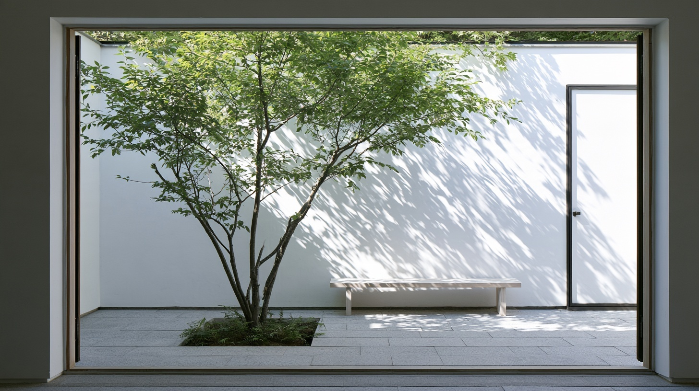
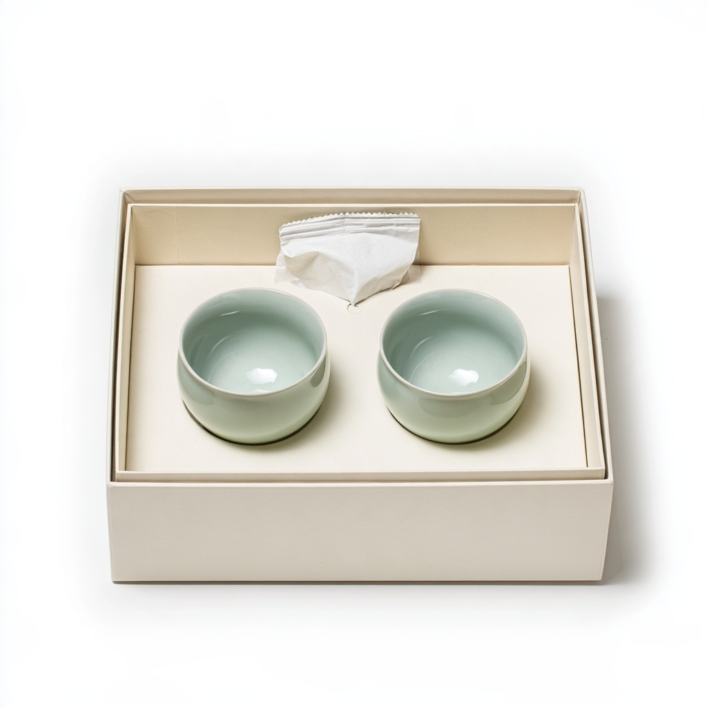

Time,
in good
company.
Tea, objects and spaces. A world shaped around the way we spend our days.
Get to know DAGYEONG
Some days ask for quiet.
Others call for another cup.
We create around both.
To make everyday life
feel a little more
like your own.
A useful shape. An open chair. Time that has not been filled in yet. Our interest begins with these small things, and with what they make possible.


Not every moment
needs an occasion.
Begin with the things you already enjoy. A cup of tea, a place to sit, and a little space in the day.
A room of your ownThings we live with.
Explore the collection
Made through
attention.
We are drawn to the character that comes from making: the turn of clay, the grain of wood, a surface catching the light.
Materials & making

A concept space for quiet and company.
Stay a little.
Natural light. A comfortable seat. A place to put your cup. A room can offer a different pace without asking you to be anywhere else.
Explore the spaceFrom our
notebook.
All stories
The shape of attention
On making things, slowly.

Before the first pour
A closer look at what fills a cup.
A little care,
passed on.
Something to share
Two celadon cups and a pouch of loose-leaf tea.